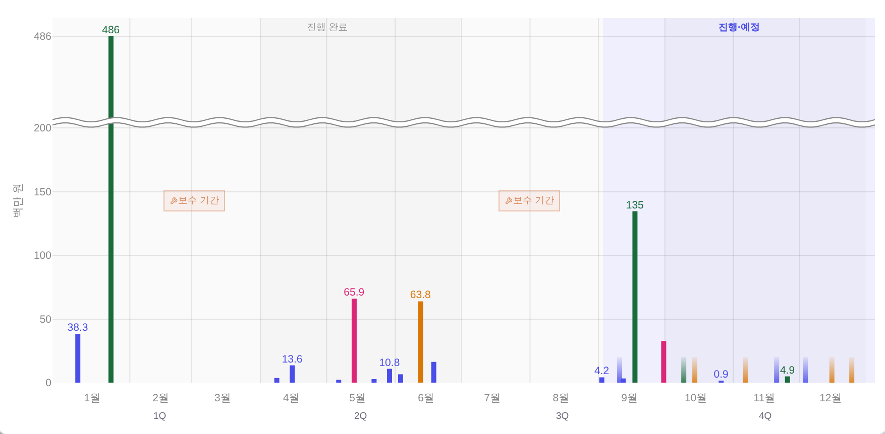
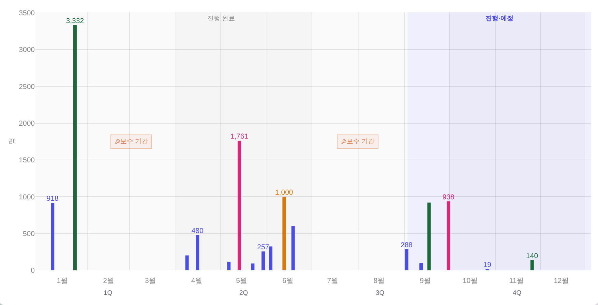
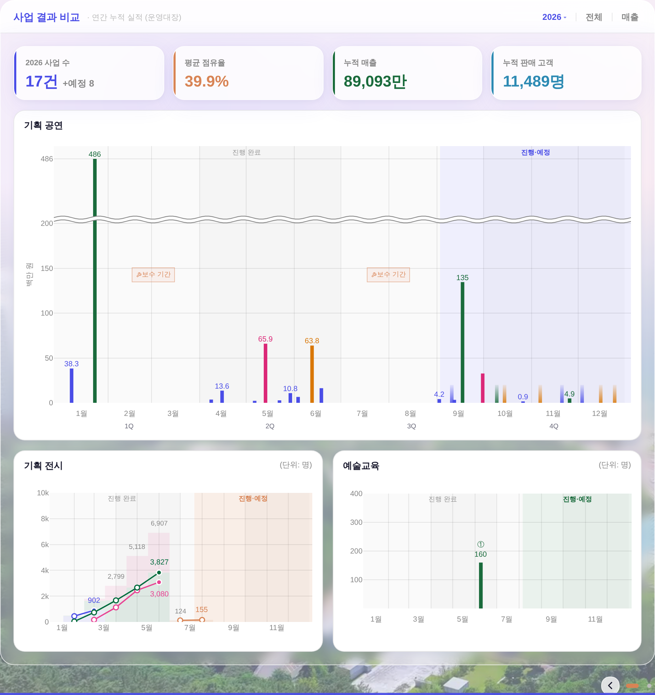
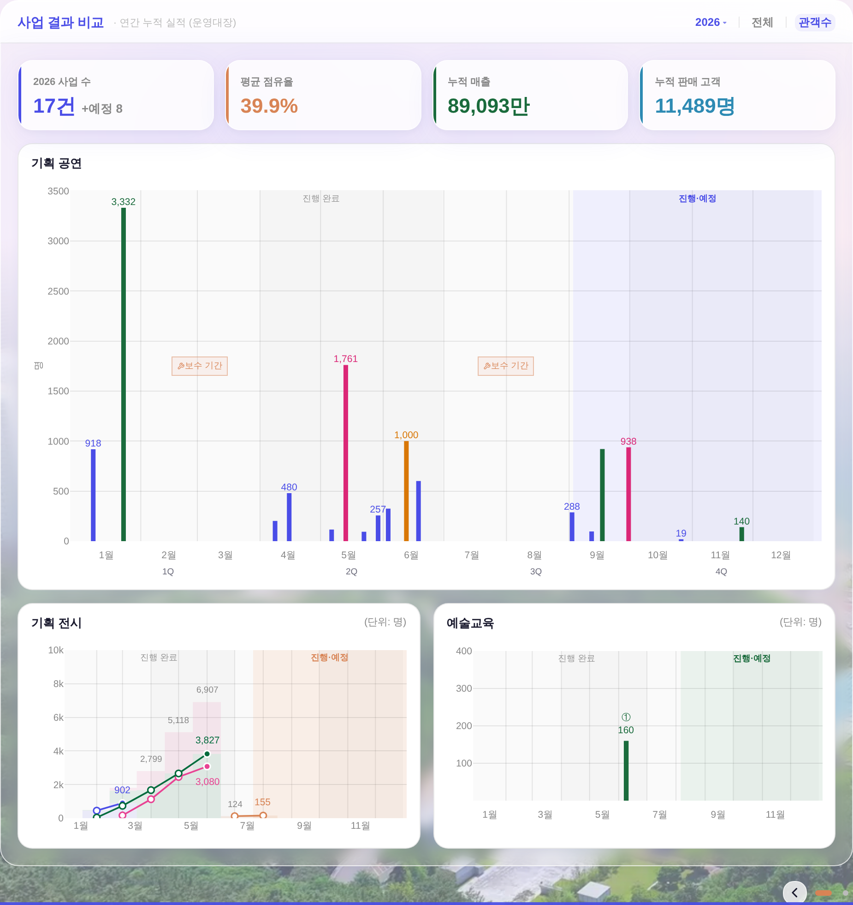

지시(운영자): 「좌측상단에 2026, 전체 그 옆에 구분자 하나 더 만들어서 매출로 해줄 수 있어?」 → 「지금이 매출이고, 누르면 관객수. 이렇게 두가지를 볼 수 있도록 자연스럽게 토글될때마다 전환되면 될듯.」
이 면의 세 분야 차트 중 공연만 축이 「백만 원」이고, 전시·교육은 「명」이다. 그래서 「이 사업에 사람이 몇 명 왔나」를 셋이 같이 보려면 눈으로 단위를 환산해야 했다. 관객수로 넘기면 세 차트가 모두 「명」 위에 서서 통째로 비교된다 — 매출로 되돌리면 종전 화면 그대로.
▼ 전 — 2026 ▾ │ 전체
▼ 후(기본 = 매출) — 2026 ▾ │ 전체 │ 매출. 구분선·글자 토글 둘 다 이 자리가 이미 쓰던 정본 부품
(.ry-hd-div + .ry-live-tg)을 그대로 한 벌 더 붙인 것 = 신규 CSS·색·값 0.
▼ 후(누른 뒤 = 관객수) — 라벨이 지금 보고 있는 축을 말한다(이웃 「전체 ↔ 판매중」과 같은 문법). 갈아탄 상태만 강조색·굵게 = 색+굵기 이중단서(기틀 §2 #3 · §3.5③).
| 상태 | 잉크(실측) | 굵기 | 글자·패딩·라운드 |
|---|---|---|---|
| 매출(기본) | rgb(136,136,136) = --dim | 600 | 12px · 1px 4px · 7px = 이웃 「전체」와 전 신호 동일 |
| 관객수(누름) | rgb(74,77,231) = --accent | 800 | |
| 이웃 「전체」 | rgb(136,136,136) | 600 |
▼ 매출 모드(기본) — y축 제목 백만 원 · 라벨 38.3 / 486 / 13.6 / 65.9 · 축 중략(≈) 발화

▼ 관객수 모드 — y축 제목 명 · 눈금 0~3,500 · 라벨 918 / 3,332 / 480 / 1,761 / 1,000


▲ 매출 — 공연 「백만 원」 · 전시/교육 「명」(자가 둘)

▲ 관객수 — 셋 다 「명」(자가 하나). KPI 4칸(사업 수·평균 점유율·누적 매출·누적 판매 고객)은 두 모드에서 그대로 = 토글로 사라지는 숫자가 없다.
_bizDrawSalesBars는 원래 「매출이 조인됐으면 매출(백만 원) · 아니면 판매 인원(명)」으로 갈리게
돼 있었고(폴백 경로), 값·라벨 서식·y축 제목·툴팁·축 중략이 전부 그 갈림목 하나(hasRev)를 본다.
관객수 모드 = 그 갈림목을 명 쪽으로 고정하는 한 줄 = 새 계산·새 축·새 형태 0.
| 자리 | 한 일 |
|---|---|
_bizmState.metric | 'rev'(기본) │ 'aud' — 3면 전용 상태(우 열 표 _ryLivePref 등과 분리) |
_bizmMetricTrigger()_bizmMetricToggle() | 정본 .ry-live-tg 한 벌 + 전환은 연도·필터와 같은 디졸브(_bizmDissolve) = 「자연스럽게」 |
_bizmTools() | .ry-hd-div 하나 더 + 토글 = 「2026 ▾ │ 전체 │ 매출」 |
_bizDrawSalesBars() | var AUD=(!ED&&_bizmAudMode()); var hasRev=!AUD&&… — 교육 반쪽(ED)은 수강생(명) 한 축뿐이라 토글 밖 |
| 안 건드린 곳 | KPI 4칸 · 전시/교육 반쪽 · 우 열 「판매현황 상세」 표(관객수·매출을 늘 같이 적는다 = 바뀔 값 없음 → 재렌더도 안 한다) |
| 축 | 결과 |
|---|---|
| 매출 모드 차트 픽셀 | 전과 바이트 동일(md5 2d9b4630…) = 기본 화면 회귀 0 |
| 왕복(매출→관객수→매출) | y축 제목 백만 원 → 명 → 백만 원 · 눈금·라벨 전부 출발과 동일 |
| KPI | 두 모드 동일(사라지는 숫자 0) |
| 머리줄 한 줄 계약 | 1920 · 1280 둘 다 한 줄(부제 말줄임 미발화) |
npm run check | design 1546/1546 · refs · modal-head 61 · exchart · parity(갈래 증가 0) · _YR 전건 PASS |
npm run smoke:layout | PASS — 박스 Δ0 · 흰 카드 하단 Δ0 |
하네스 = tools/scratch/shot_bizmetric.mjs(목데이터·QA 진입로 = shot_salescharts.mjs 그대로 계승 · 실API·PII 미접촉).